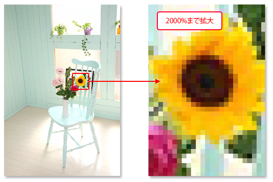
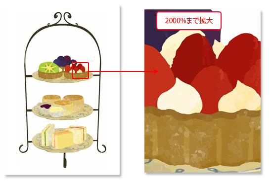

本節では、ビットマップ画像と呼ばれる画像形式と解像度の変更方法について学習します。
ビットマップ画像とは「ピクセル」と呼ばれる四角い小さな点一つ一つに色を付け、
その「ピクセル」を画像内に隙間なく無数に並べることで構成される画像のことを指します。
フォトショップで作成された画像はこの「ビットマップ画像」として保存されます。

上でも述べた通り、画像に配置されるすべての「ピクセル」に色を設定し画像を表示させているため、
複雑な色の階調表示を可能にし、画像内の特定の色だけを抜き取り加工するといった操作が可能です。
つまり写真などの加工・編集に非常に適した画像形式といえます。
ただし、画像内で使われるピクセル総数が少ないとピクセルの「アラ」が目立ってしまいます。
この「アラ｣はピクセル総数を増やせば目立たなくなりますが、
その分ファイルサイズが増えてしまい、加工の際の処理が重くなるといった弊害が生じます。
このピクセル総数をPhotoshopでは画像解像度として設定しています。
ビットマップ画像とは対照的に拡大しても「ピクセル」のアラが目立たない画像形式があります。
ベクトル画像と呼ばれるものがそれに相当します。
主に「Illustrator（イラストレータ）」で作成される画像形式が「ベクトル画像」になります。
仕組みとしては「アンカーポイント」と呼ばれる点を「パス」と呼ばれる線で結ぶことで、
ポイント間の線の距離や角度、曲線の曲がり具合などを
数値として計算して画像に変換表示させます。
ビットマップ画像のように点一つ一つを実際に描画するわけではないので、
画像を拡大縮小したり変形しても、この点と線の位置関係を再計算して表示させるだけなので、
理論上ビットマップのようなピクセルの「アラ」が表示されることはありません。

ただし、このベクトル画像はフォトショップのような複雑な色の表現や加工には不向きなため、
どちらかといえばベタ塗りに近い色調を扱うイラストやロゴ、
文字を多用するチラシ作成などに多く利用されています。
（文字データはフォトショップでもベクトルデータとして扱われています）
以上でこの項の学習は終了です。
次の項へ進んでください。